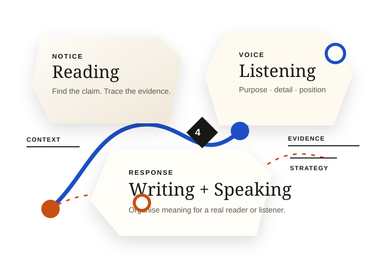

IELTS Preparation (B2) · IELTS Pilot Cohort
IELTS Test Structure Overview
Understand what each part of IELTS asks you to do, which language evidence it collects, and how to approach the instructions with precision.
3 of 7 sections viewed18 min left

01 · Orient
One test, four kinds of evidence.
IELTS does not measure one vague idea of “good English”. It gathers evidence from four skills: how you understand written and spoken language, and how clearly you communicate in writing and speech.
Academic and General Training candidates share the same Listening and Speaking tests. Reading and Writing differ because the contexts and communication purposes are different.
Why are results reported as skill bands?
A separate band for each skill helps you see a profile rather than a single total. A learner may understand complex reading texts confidently while still needing more control in extended speaking.
02 · Notice
What IELTS measures
Every task creates an opportunity to demonstrate a specific part of communicative ability. Knowing the purpose of a task helps you choose a strategy without trying to predict tricks.
ReadingLocate ideas, distinguish claims, follow relationships and interpret detail in context.
ListeningFollow purpose, detail, attitude and development across conversations and talks.
WritingAddress the task, organise ideas, use vocabulary precisely and control grammar.
SpeakingDevelop ideas fluently, choose language flexibly and remain intelligible.
Visual explainer · 03:20
The four-skill test at a glance
Prototype media treatment with caption, duration and a clear non-video description. No media is loaded.
Transcript preview: The four components gather different evidence, then contribute to an overall band profile.
03 · Keep
A reference you can return to.
Field guide / page 2
Four skills, one evidence profile
04 · Practise
Read the task before the text
Fixed visual states only. Your selections are not scored or stored.
✓ Correct
The lesson explicitly distinguishes four skill bands from the overall band. This state is pre-authored for visual evaluation; no client scoring occurred.
Read the detailed explanation
Strategy: look for absolute language such as “only”. The passage states that IELTS gathers and reports evidence for Reading, Listening, Writing and Speaking, so the absolute claim conflicts with the lesson.
3Summary completion with a shared word bank
Choose one word for each gap. Options may be used once.
- detail
- purpose
- decoration
- evidence
- speed
IELTS tasks collect about language ability. Reading instructions clarifies the task .
4Inline dropdown completion
Listening and Speaking are for Academic and General Training candidates.
The four skills contribute to an overall band ______.
Maximum: two words. Spelling matters in scored practice.
6Match each skill to the main evidence it produces.
Group review · 3 of 5 automatically reviewed
This is a fixed presentation study. It demonstrates the feedback hierarchy without computing a result.
Detailed explanation and next strategy
Instruction words define the response: the source, the maximum length and whether an option may be reused. On a retry, underline those constraints before searching the passage or listening for detail.